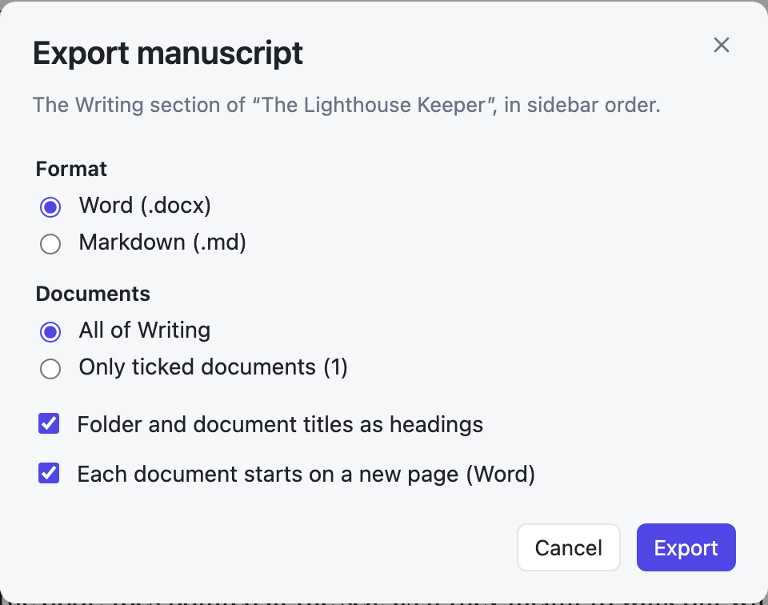

Your files
Your books are plain Markdown files that you own, wherever you keep them.
Documents are Markdown files
Every document is a .md file. It starts with a short header that holds the title, followed by your text:
---
title: "Chapter 1: The Light"
---
The bus left her at the end of the road.Any text editor can open these files. Other programs may add lines to the header, such as Obsidian tags, and SJB Writer keeps them.
Older versions of the app saved JSON files. They were converted once, and the originals are kept in hidden .json-backup folders.
Where your books live
By default, your books are inside the app's folder:
Global/prompts/ saved instructions (Prompts)
Global/system/ rules (System)
Projects/<project>/background/ notes
Projects/<project>/writing/ the bookTo keep them somewhere else, open Settings → Books folder → Choose… and pick a folder in the Mac's folder window.
- If the folder is empty, the app copies your books there and uses them from then on. The originals stay where they were, as a backup.
- If the folder already has books, the app uses those.
- Use the app folder again switches back.
Your settings, API key, and model list stay with the app. If the chosen folder is missing, for example on an unplugged drive, the app uses the app folder and tells you.
Working with Obsidian
Choose a books folder inside your Obsidian vault. Then both programs work on the same files: write in either one, and the other one sees the changes. See Editing in another program.
Export
One document: hover over it in the sidebar and choose ⋯ → Export as Markdown or Export as Word.
The whole book: open the project ⋯ menu → Export manuscript…

- Format: Word (.docx) or Markdown (.md).
- Documents: all of Writing, in sidebar order, or only the ticked documents.
- Headings: folder and document titles become headings, so Part → Chapter works.
- New pages: each document starts on a new page in Word.
The Word file uses a standard manuscript layout: Times New Roman 12, double spaced, indented first lines, and 1-inch margins. Bold, italics, headings, lists, quotes, and * * * scene breaks carry over.